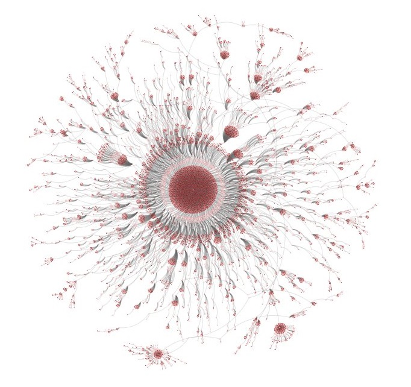
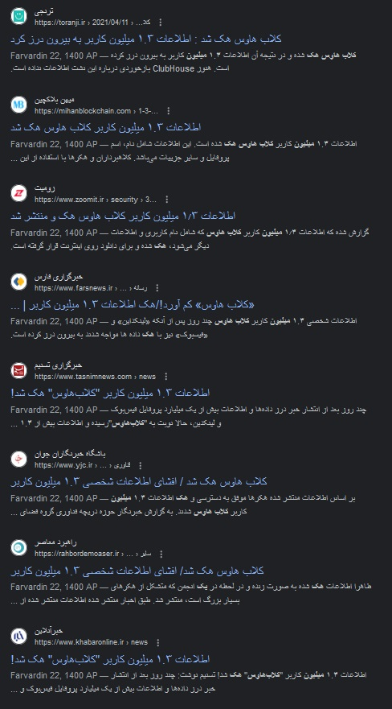
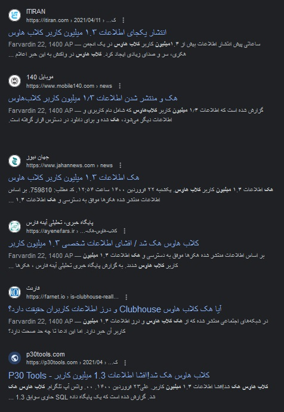
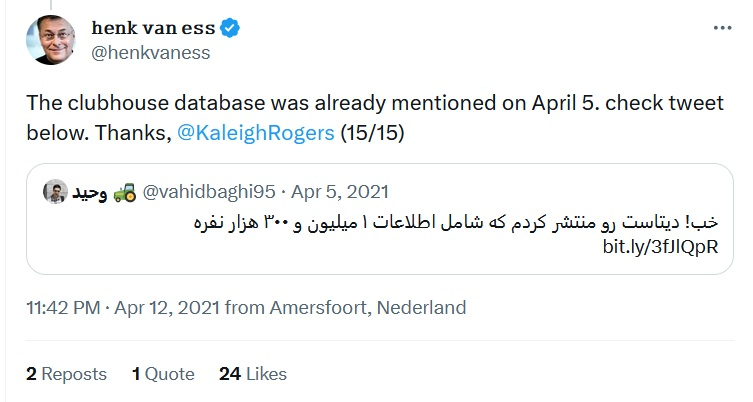
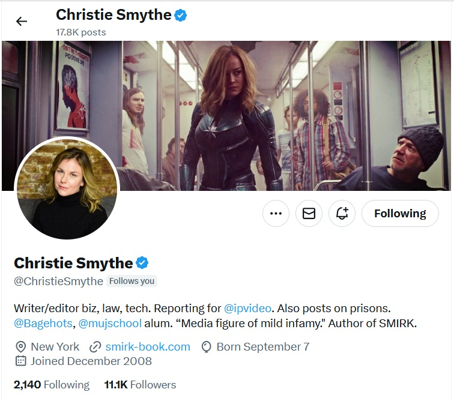

کلاب هاوس یه برنامه چت صوتی گروهی است که زمستون سال ۱۳۹۹ توی ایران ترند شد و فقط با دعوتنامه میشد از برنامه استفاده کرد و فقط هم نسخه ios داشت. همین دعوتنامهای بودنش باعث یک FOMO (ترس از بقیه جا ماندن) شده بود و تونست افراد زیادی رو جذب خودش کنه. من داشتم دنبال راهی میگشتم که دعوتنامه پیدا کنم. توی توییتر سرچ کردم تا ببینم کسی دعوتنامه داره یا نه. ۲۹ بهمن ۱۳۹۹ ساعت ۰۰:۵۴ بامداد یه توییت از یه نفر دیدم که نوشته بود من کد دعوت دارم، اگر کسی میخواد به من پیام بده. منم سریعا بهش پیام دادم و اونم به شکل عجیبی ۰۰:۵۵ بامداد جواب داد و گفت باشه، شماره تلفنت رو بفرست تا برات دعوتنامه بفرستم. این بنده خدا هم آمریکایی بود. کلا هم دیگه رو نمیشناختیم. البته حوزه کاریمون به هم نزدیک بود. اون هم داشت روی یادگیری تقویتی کار میکرد و دانشجو دانشگاه UCLA بود. اینجوری شد که من وارد کلاب هاوس شدم.
وقتی وارد کلاب هاوس میشدی، توی پروفایل هر شخص نوشته بود که توسط چه کسی دعوت شده. اگر همینجوری جلو میرفتی، میتونستی سرشاخه رو پیدا کنی. خب این خیلی برای من هیجان انگیز بود. من ۷ اسفند ۱۳۹۹ یه توییت هم در موردش نوشتم :
یه روز قبل از این توییت داشتم دنبال راهی میگشتم که بتونم API کلاب هاوس رو پیدا کنم تا بتونم این درخت دعوت ها رو پیدا کنم که به ریپازیتوری زیر رسیدم :
یه نفر اومده بود و یه wrapper پایتون نوشته بود که میشد به API غیر رسمی دسترسی داشت. البته من اون موقع به فکر نرسیده بود که خودم هم با استفاده چیزی مثل mitmproxy میتونم این API رو پیدا کنم. خلاصه کدش رو نوشتم و گذاشتم یه جایی تا اطلاعات رو استخراج کنه. منم چون خیلی ذوق داشتم که این درخت دعوت ها رو ببینم خیلی صبر نکردم و یه مقدار که دیتا جمع شد با استفاده از کتابخونه d3.js نمودار زیر رو رسم کردم :

اولش فقط با اکانت خودم داشتم دیتا رو جمع میکردم، اما به مرور اکانت ها رو زیاد کردم و از یه جایی به بعد یه سوراخی پیدا کردم که میتونستم مفتی و راحت کد دعوت پیدا کنم و اینجوری شد که ۶۵ تا اکانت ساختم. جمع آوری دیتا تموم نشده بود ولی انقدر دوست داشتم که زودتر این دیتاست رو منتشر کنم که ۱۶ فروردین ۱۴۰۰ یه توییت زدم و گفتم که اطلاعات ۱.۳ میلون نفر رو در kaggle منتشر کردم :
این دیتاست شامل اطلاعات عمومی بود که عبارتند از : نام، نام کاربری، آدرس URL عکس کاربر، تعداد فالوور ها و فالووئینگ ها، تاریخ ساخت اکانت و نام کاربری شخصی که دعوت رو انجام داده بود. حالا چرا kaggle منتشر کردم؟ kaggle یه سایتی برای متخصصین علوم داده است. دیتاست های زیادی هم داخلش هست که شما میتونید همونجا انواع و اقسام الگوریتم های یادگیری ماشین رو روی اونها تست کنید. دیتاستی که من گذاشتم واقعا چیز خاص و عجیبی نبود. دیتاست های خیلی خفن تری توی kaggle از همه شبکه های اجتماعی وجود داره. ناگفته نماند بعد از این قضیه دیتاستم تو kaggle مدال طلا گرفت! بعده ها دیتاست رو آپدیت هم کردم و تعداد رکورد ها رو به ۹.۷ میلیون نفر رسوندم.
یه روز صبح از خواب بیدار شدم و دیدم همه کانال های تلگرامی، سایت های خبری و غیر خبری، توییتر، اینستاگرام و … نوشتن که اطلاعات ۱.۳ میلیون نفر کاربر کلاب هاوس هک شده!


به جرات میتونم بگم هیچ کانال و سایتی نبود که این خبر رو نذاشته باشه. حالا داستان چی بوده؟ یه فروم هکری وجود داشت به نام raid forum که الان فکر کنم تعطیل شده. ظاهرا یه نفر اومده دیتاست رو توی raid forum گذاشته و گفته که هک شده! بعد من گفتم حالا طوری نیست. بعد اومدم توییتر دیدم مثل اینکه اوضاع خراب تر از این حرفاست! سایت های خبری داخلی کجا بود؟! تمام رسانه های بین المللی خبرش رو گذاشتن! سایت هایی نظیر CyberNews و Hacker News و WikiLeaks و Insider و Techmeme و دیگه هر چی سایت خبری خارجی در حوزه IT بود خبرش رو گذاشته بود! قشنگ خبرش مثل بمب تو همه جا از جمله توییتر ترکیده بود.
تا اینجا کسی (به جز فالوور های توییترم) نمیدونست کار من بوده. تا اینکه این شخص که یک متخصص OSINT هلندی بود توییت من رو پیدا کرد :

خبرش رو هم تو نشریه nrc هلند نوشته بود :
بعدش هم این بنده خدا اومد بهم گفت بیا با هم یه مصاحبهای در این زمینه داشته باشیم :

در نتیجه یه مصاحبهای که با هم داشتیم رو تو لینک زیر گذاشته :
بعد از این داستان، افراد زیادی بهم پیام میدادند. همینجوری تونستم یه پروژه web scraping دلاری هم بگیرم. خلاصه داستان عجیبی بود. حس و حال اون موقع رو با هیچ چی عوض نمیکنم 🙂
nb.neighbours()
| title | date | |
|---|---|---|
| prev | چرا آموزش برنامهنویسی تولید کردم؟ | ۱۴۰۲/۰۶ |
| next | سریال ساعت برنارد | ۱۴۰۲/۰۷ |